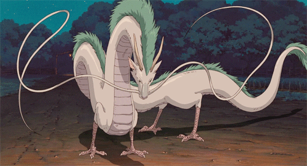
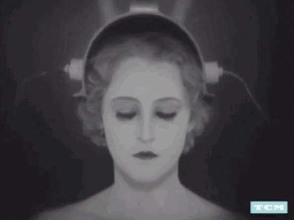
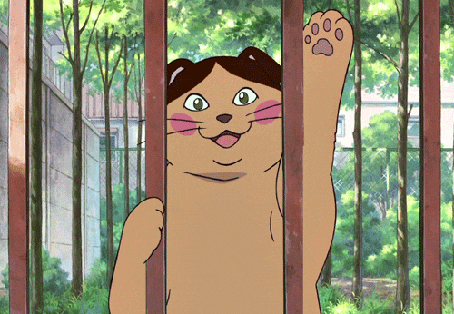

The animations are smooth, especially for its time. The characters are interesting and tell a universal story. 
A classic, sci-fi film; the sets were unique and the soundtrack was amazing. The themes of the story are still relevant till this day. 
A cute and simple animated story about cats. The Baron is such a charming character! 